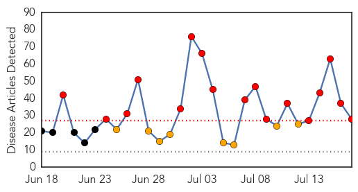

30 Day Trends
Web: 17 alerts, 8 warnings
Twitter: 8 alerts, 0 warnings
Top Articles:
- 1.000
- Ebola crisis in West Africa deepens; 539 dead
- 1.000
- Ebola Update: Largest Outbreak on Record Causes 603 Deaths
- 1.000
- Sierra Leone News: Hand sanitizer does not prevent Ebola virus-Harold Thomas « Awoko Newspaper
- 0.999
- Ivory Coast blocks refugees amid Ebola fears
- 0.999
- Ebola Outbreak is One of Africa's Worst
- 0.996
- Death toll from West Africa Ebola outbreak jumps to 603 - WHO
- 0.992
- Race Against Time To Control Ebola Outbreak
- 0.991
- Fearmongering GOP congressman warns immigrant children carry Ebola virus
- 0.985
- ICT Director calls for human resources in Ebola fight « Awoko Newspaper
- 0.980
- Hampden parking woes lead to call for strict limits
- 0.980
- French blogger fined €1,500 for writing negative restaurant review
- 0.980
- Meet the man who claims to be 'selfie inventor'
- 0.980
- Police say transgender woman was killed near Lake Ashburton
- 0.980
- Police investigate murder-suicide in Hughesville
- 0.980
- Md. state trooper shoots pit bull after bite
- 0.980
- Snowden to lose seat on Annapolis housing board
- 0.980
- Hogan, many Democrats work the crowd at annual clam bake
- 0.980
- Police say transgender woman killed near Lake Ashburton
- 0.980
- Should you trust hospital ranking lists?
- 0.971
- The virus detective who discovered Ebola in 1976
- 0.959
- Ebola Wreaks Economic Woe In West Africa
- 0.950
- Hon Mustapha Brima Cries in Parliament over Ebola Death Toll
- 0.925
- 17 July 2014: World - ECHO Flash Events - Philippines
- 0.879
- Mali: Preparedness for Ebola DREF Operation N° MDRML010 - Mali
- 0.852
- President Koroma Receives Donation from State Lottery and Gift from Saudi Arabia
- 0.563
- Jonathan pledges $3.5m to stop Ebola spread in West Africa
- 0.550
- Liberia-Ebola survivor reintegrated into society
- 0.533
- Poor Oversight Catches Up with High-Security Infectious Agent and Disease Labs
Top Tweets:
-
No tweets found for Jul 17, 2014
Web/News Articles
Tweets